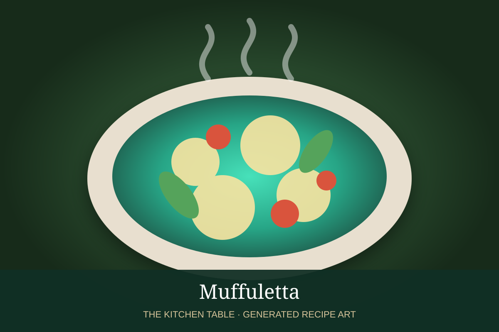

← Back to all recipes
SANDWICH · NEW ORLEANS
Muffuletta
The classic New Orleans Italian sandwich layered with olive salad, salami, mortadella, ham, provolone, and mozzarella.
25 min + restServes 4–6

Photo: Wikimedia Commons
Ingredients
- 1 large round muffuletta loaf or sturdy sesame bread
- 1 cup olive salad, well drained plus some oil
- 4 oz Genoa salami
- 4 oz mortadella
- 4 oz ham or capicola
- 4 oz provolone
- 4 oz low-moisture mozzarella
- Extra olive-salad oil, as needed
Preparation
- Slice the loaf horizontally and pull out a small amount of the interior crumb if the bread is very thick.
- Spoon olive salad generously over both cut sides, including some of its seasoned oil.
- Layer salami, mortadella, ham, provolone, and mozzarella evenly over the bottom half.
- Close the sandwich and press firmly.
- Wrap tightly and let rest at room temperature for 20 to 30 minutes, or refrigerate several hours so the olive salad flavors the bread.
- Cut into wedges and serve at room temperature or lightly warmed.